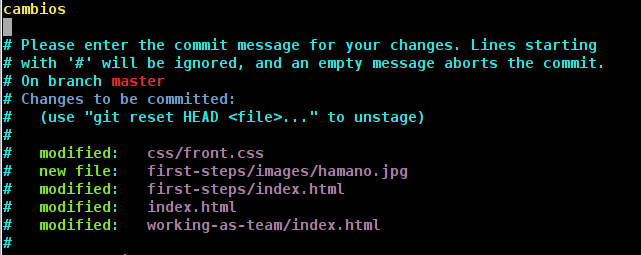
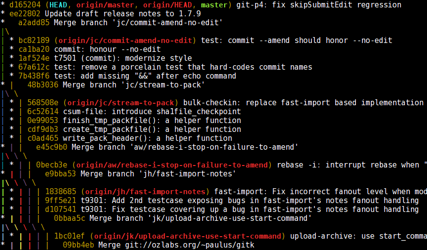

Git puesto en práctica
Git
Trabajando en equipo
Apreta la tecla → para avanzar.

La programación en equipo de proyectos hoy en día es fundamental, y los beneficios son múltiples tanto para los desarrolladores como para el proyecto. Si vamos a trabajar en un proyecto en equipo con git deberemos saber:
Cada commit al repositorio debe estar bien documentado, es una recomendación de buenas prácticas de desarrollo a la que si nos acostumbramos ayudaremos mucho a la evolución de los proyectos en los que participemos.
Los commits que realizamos en principio se almacenan únicamente en nuestro repositorio, pero trabajando en equipo lo normal es mandarlos a un repositorio padre en el que participan varias personas.
Veamos un ejemplo de un commit mal documentado. Puede que nuestras modificaciones sean perfectas, pero el comentario asociado al commit debe acompañarlas. Ejemplo:

Veamos un ejemplo de un commit bien documentado. La primera línea debe ser un resumen de todos los cambios. En las líneas siguientes podemos explicarlo con detalle, separando los párrafos adecuadamente.


Necesitamos una herramienta con la que poder examinar cuáles han sido los últimos commits al repositorio. Al trabajar en equipo los cambios que hacen los compañeros pueden afectar a nuestro desarrollo. git log es la utilidad que necesitamos para ello.
Veamos algunos ejemplos, aunque git log es muy potente y nos permite parametrizar la consulta en función de lo que queramos obtener, el uso más común es el que vamos a ver en las próximas pantallas.
Si ejecutamos este comando dentro de un directorio de trabajo veremos un resumen de los últimos commits al repositorio. Muy útil para echar un vistazo rápido a las últimas modificaciones.
Veamos el resultado de ejecutar un git log sin parámetros dentro de un directorio de trabajo clonado del propio repositorio del código fuente de git.
Podemos navegar con este comando un proyecto tan complejo como git y ver cómo desarrollan los gurús.


Las ramas son bifurcaciones del proyecto, que permiten desarrollar diferentes partes de un software en paralelo. Facilitan el aislar los cambios sin afectar al resto del desarrollo, para posteriormente fusionar la rama con la master branch (si así lo deseamos).
Una rama nueva se crea con git branch <nombre>, cambiaremos al contexto de una rama con el comando git checkout <nombre>, y fusionaremos ramas con git merge. Veamos en detalle cada comando.
Para listar las ramas creadas en el repositorio:
[~/git-puesto-en-practica]$ git branch * master
La rama principal que siempre tendremos creada se denomina master.
Creamos una rama nueva con el siguiente comando:
[~/git-puesto-en-practica]$ git branch testing [~/git-puesto-en-practica]$ git branch * master testing
Finalmente, borramos una rama utilizando el parámetro -d.
[~/git-puesto-en-practica]$ git branch * master testing [~/git-puesto-en-practica]$ git branch -d testing [~/git-puesto-en-practica]$ git branch * master
La facilidad de uso de las ramas nos permite bifurcar una versión concreta del proyecto para empezar a trabajar en una nueva característica, o un bug que haya que solucionar.
Podemos cambiar el contexto y comenzar a trabajar con otra rama mediante el comando checkout.
[~/git-puesto-en-practica]$ git branch * master devel [~/git-puesto-en-practica]$ ls a.txt [~/git-puesto-en-practica]$ git checkout devel Switched to branch 'devel' [~/git-puesto-en-practica]$ git branch master * devel [~/git-puesto-en-practica]$ ls a.txt b.txt
Si queremos fusionar una rama con la que actualmente estamos trabajando, utilizaremos git merge:
[~/git-puesto-en-practica]$ git branch * master devel [~/git-puesto-en-practica]$ git merge devel Updating 211141d..26b8cd6 Fast-forward b.txt | 1 + 1 files changed, 1 insertions(+), 0 deletions(-) create mode 100644 b.txt
Git es capaz de resolver conflictos en los cambios de manera automática (y muy inteligentemente), salvo aquellos que no haya más remedio que resolverlos a mano.

Un proyecto git no tiene un repositorio central al que enviar los cambios, pero para colaborar en un proyecto integrado por varios desarrolladores, necesitaremos enviar nuestros cambios a un repositorio común.
Es habitual tener definido un repositorio remoto con el cual interactuaremos enviando nuestros cambios (si tenemos permisos de escritura), o del cual nos traeremos las actualizaciones que se vayan produciendo.
Los repositorios git son todos iguales (no hay diferencia entre cliente y servidor). En algunos tendremos permisos de lectura y en otros permisos de lectura/escritura.
Podemos definirnos todos los repositorios remotos que queramos asociados a nuestro repositorio, de los que obtendremos (y tal vez enviemos) actualizaciones.
El comando que nos permite gestionar los repositorios remotos es git remote.

Si hemos clonado (con git clone) nuestro proyecto, ya tendremos definido un repositorio remoto, que por defecto se identifica con el alias origin.
El comando git remote -v nos mostrará todos los repositorios remotos que tengamos definidos:
[~/git-puesto-en-practica]$ git remote -v origin git@github.com:tombatossals/git-puesto-en-practica.git (fetch) origin git@github.com:tombatossals/git-puesto-en-practica.git (push)
Añadimos o eliminamos repositorios remotos con estos dos comandos. El nombre (alias) que le damos al repositorio es a nuestro gusto, aunque como convenio se pone el repositorio base como origin.
Añadir un repositorio:
git remote add octopress git://github.com/imathis/octopress.git
Borrar un repositorio:
git remote rm octopress
Ya sabemos cómo enlazar nuestro repositorio con otros repositorios asociados. Veamos cómo obtener (o enviar) los cambios de un repositorio de nivel superior.
Esta operación es muy útil para estar siempre en sincronía con los cambios que van realizando en el proyecto principal.
Este comando obtiene los últimos cambios del repositorio remoto, y realiza un merge con la rama local con la que estemos trabajando.
[~/git-puesto-en-practica]$ git pull remote: Counting objects: 10, done. remote: Compressing objects: 100% (3/3), done. remote: Total 6 (delta 3), reused 6 (delta 3) Unpacking objects: 100% (6/6), done. From github.com:tombatossals/git-puesto-en-practica 7d8ccd7..9c0a361 master -> origin/master Updating 7d8ccd7..9c0a361 Fast-forward acerca-de/index.html | 52 ++++++++++++++++++++++++++ trabajando-en-equipo/images/pull.jpg | Bin 0 -> 65507 bytes trabajando-en-equipo/index.html | 66 +++++++++++++++++++++++++++++++-- 3 files changed, 114 insertions(+), 4 deletions(-) create mode 100644 acerca-de/index.html create mode 100644 trabajando-en-equipo/images/pull.jpg
Tal vez pull sea un comando "demasiado automático". git fetch es una alternativa más controlada, ya que al traerse los cambios del repositorio remoto no los aplica directamente sobre nuestra rama, sino que espera que nosotros lo hagamos manualmente.
Despues de un git fetch es conveniente hacer un git diff upstream/master, comparando las ramas de trabajo local con la del repositorio remoto.
Finalmente, si estamos de acuerdo con los cambios, ejecutaremos un git merge upstream/master.
Enviamos todos los cambios que hemos realizados sobre nuestro repositorio local al repositorio/s remoto/s que tengamos definido/s.
[~/git-puesto-en-practica]$ git push Counting objects: 10, done. Delta compression using up to 2 threads. Compressing objects: 100% (6/6), done. Writing objects: 100% (6/6), 60.16 KiB, done. Total 6 (delta 3), reused 0 (delta 0) To git@github.com:tombatossals/git-puesto-en-practica.git 7d8ccd7..9c0a361 master -> master